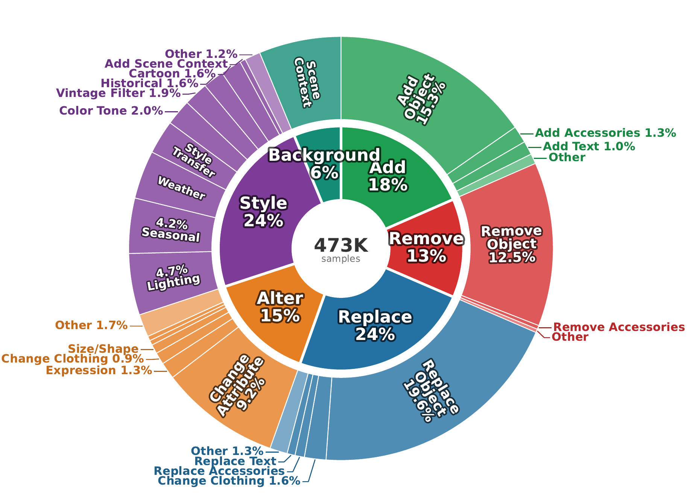
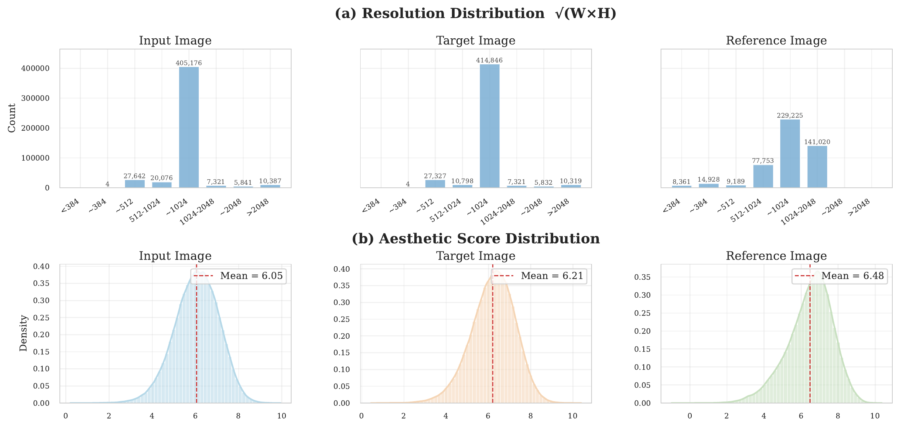
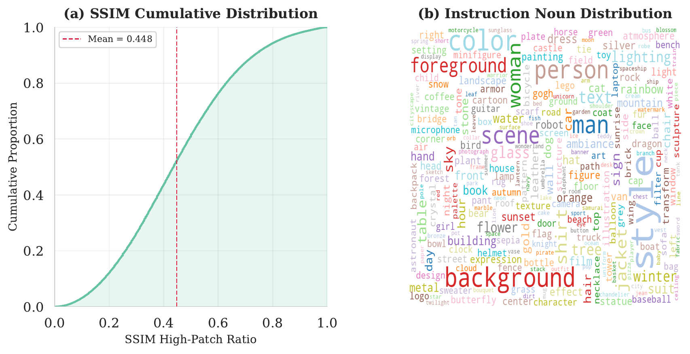
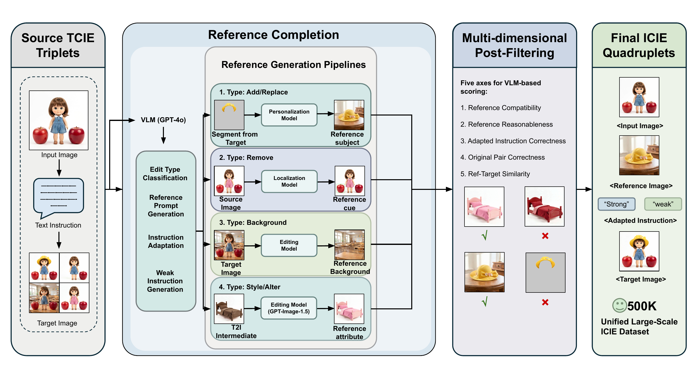
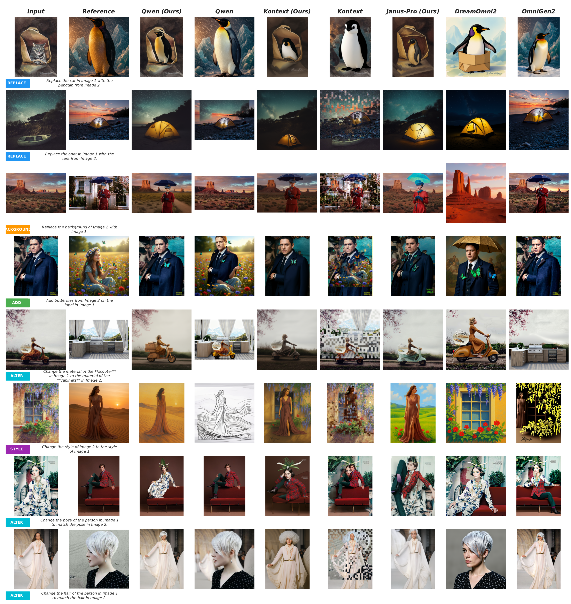

Image-conditioned image editing (ICIE) guides edits with a reference image to convey visual attributes—such as style, tone, or object identity—that are difficult to specify through text alone. Despite growing practical demand, no large-scale unified ICIE dataset currently exists in the open-source ecosystem; existing efforts cover only a narrow subset of edit types at small scale, typically constructed via costly forward synthesis.
We reformulate ICIE data construction as a reference-completion problem: high-quality text-conditioned image editing (TCIE) datasets already supply the input image, instruction, and edited target, and can be augmented with aligned reference images through type-specific synthesis and lightweight instruction adaptation. Building on this insight, we propose a scalable pipeline equipped with weak-instruction augmentation and five-dimensional VLM-based post-filtering, and use it to construct RCEdit-500K—the first large-scale unified open ICIE dataset comprising 477K quadruplets across six edit categories (add, remove, replace, background, style, alter) with both concrete and abstract reference types.
Training on RCEdit-500K consistently improves reference-guided editing: LoRA adaptation on diffusion models yields up to +1.22 average gain, and an autoregressive model without native editing ability acquires competitive ICIE performance, demonstrating that data availability is the primary bottleneck for open-source ICIE.



Our reference-completion pipeline converts any TCIE dataset into ICIE training data through four stages: GPT-4o analysis, type-specific reference generation, GPT Image processing (for style/alter), and 5-dimensional VLM-based post-filtering.

RCEdit-500K covers six edit categories with both concrete references (add, replace, remove, background) and abstract references (style, alter). Click the tabs below to browse examples from each category.
We evaluate on the MultiBanana two-reference benchmark using GPT-4o across five axes: Instruction Alignment (IA), Reference Consistency (RC), Background-Subject Match (BSM), Physical Realism (PR), and Visual Quality (VQ).
| Model | IA ↑ | RC ↑ | BSM ↑ | PR ↑ | VQ ↑ | Avg ↑ |
|---|---|---|---|---|---|---|
| Closed-source models | ||||||
| Nano Banana | 4.59 | 4.00 | 5.13 | 5.72 | 5.44 | 4.67 |
| GPT-Image-1.5 | 5.87 | 4.94 | 5.40 | 5.89 | 5.85 | 5.51 |
| Open-source models | ||||||
| Flux-Kontext | 2.94 | 2.80 | 2.39 | 2.94 | 2.81 | 2.82 |
| Omnigen2 | 3.62 | 3.28 | 4.50 | 5.17 | 5.05 | 3.93 |
| Qwen-Image-Edit-2509 | 3.60 | 4.06 | 4.83 | 5.61 | 5.39 | 4.31 |
| Dreamomni2 | 4.45 | 3.61 | 5.07 | 5.83 | 5.80 | 4.54 |
| Qwen-Image-Edit-2511 | 4.15 | 4.18 | 4.95 | 5.68 | 5.59 | 4.58 |
| Flux-Klein-4B | 4.69 | 4.01 | 5.05 | 5.62 | 5.57 | 4.71 |
| Flux-Klein-9B | 4.78 | 4.09 | 5.01 | 5.61 | 5.50 | 4.75 |
| + RCEdit-500K (Ours) | ||||||
| Janus-Pro (baseline) | 1.02 | 1.01 | 1.02 | 1.04 | 1.11 | 1.03 |
| Janus-Pro + RCEdit-500K | 4.65 | 3.81 | 4.52 | 5.04 | 4.91 | 4.43 |
| Flux-Kontext (baseline) | 2.94 | 2.80 | 2.39 | 2.94 | 2.81 | 2.82 |
| Flux-Kontext + RCEdit-500K | 3.52 | 3.42 | 4.76 | 5.50 | 5.27 | 4.04 |
| Qwen-Edit-2509 (baseline) | 3.60 | 4.06 | 4.83 | 5.61 | 5.39 | 4.31 |
| Qwen-Edit-2509 + RCEdit-500K | 4.08 | 4.03 | 5.11 | 5.86 | 5.72 | 4.56 |
Training on RCEdit-500K yields consistent gains: +1.22 avg for Flux-Kontext, +0.25 for Qwen-Edit-2509, and transforms Janus-Pro from 1.03 to 4.43.
Visual comparison between base models and their RCEdit-500K fine-tuned counterparts across concrete-object edits (add, replace) and abstract-attribute edits (style, alter).

We ablate two key designs: five-dimensional post-filtering and weak-instruction augmentation, and compare against existing ICIE datasets.
| Variant | IA ↑ | RC ↑ | BSM ↑ | PR ↑ | VQ ↑ | Avg ↑ |
|---|---|---|---|---|---|---|
| w/o post-filtering | 3.60 | 3.30 | 3.62 | 4.20 | 4.04 | 3.62 |
| w/o weak instruction | 3.67 | 3.35 | 3.84 | 4.50 | 4.27 | 3.74 |
| RCEdit-500K (full) | 3.52 | 3.42 | 4.76 | 5.50 | 5.27 | 4.04 |
| Training Data | IA ↑ | RC ↑ | BSM ↑ | PR ↑ | VQ ↑ | Avg ↑ |
|---|---|---|---|---|---|---|
| Baseline (no LoRA) | 2.94 | 2.80 | 2.39 | 2.94 | 2.81 | 2.82 |
| ImgEdit | 3.05 | 2.83 | 2.58 | 3.10 | 2.92 | 2.92 |
| AnyEdit (w/o structure) | 3.02 | 2.65 | 2.10 | 2.57 | 2.44 | 2.68 |
| AnyEdit | 2.17 | 1.87 | 4.55 | 5.15 | 4.93 | 2.97 |
| RCEdit-60K (Ours) | 3.62 | 3.28 | 3.78 | 4.45 | 4.16 | 3.68 |
| RCEdit-500K (Ours) | 3.52 | 3.42 | 4.76 | 5.50 | 5.27 | 4.04 |
Even at matched scale (60K), RCEdit outperforms existing ICIE datasets by a large margin, and performance continues to scale with data size.
@inproceedings{zhang2026rcedit,
title={RCEdit-500K: Reference Completion for Image-Conditioned Image Editing},
author={Zhang, Jingxu and Kim, Daneul and Pan, Yueming and Chen, Dong and Qiu, Kai and Liu, Yang and Yang, Yifan and Dai, Qi and Sun, Xiaoyan and Luo, Chong},
booktitle={European Conference on Computer Vision (ECCV)},
year={2026}
}